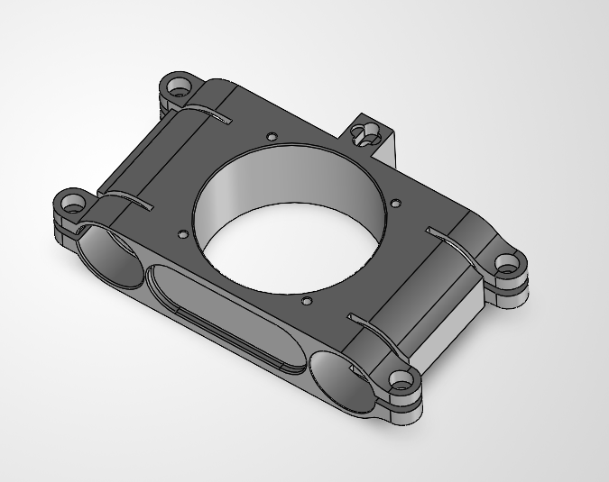

CAD enclosure · component packaging and mounting features
PROJECT 01 · CAD Designer — Co-Lead | Feb–May 2026
Research Hardware & Component Enclosure
Co-led the CAD and mechanical development of a test rig designed to manipulate RADAR sensor positioning and investigate sensor misalignment failures.
Modeled a custom enclosure in CAD to fit and organize internal components, considering component placement, access openings, and mounting features.
CAD · COMPONENT PACKAGING